📚 《全球通史》15句话，句句发人深省！
A Global History 15 Quotes That Make You Think
如果只读一部世界史，很多人会选择《全球通史》：不在于它的体量与视角perspective[pərˈspektɪv] n. 视角；观点，而在于它所提供的那种理解世界的方式。
汤因比曾将其视为“克服精神危机crisis[ˈkraɪsɪs] n. 危机的思想武器”，而麦克尼尔则更进一步，把它看作直面下一场人类危机的启示录。
我们身处的这个时代，与过去的世界有什么关联relevance[ˈreləvəns] n. 关联；相关性？今天面临的问题，是否可以把根源追溯trace[treɪs] v. 追溯；追踪至漫长的纪元以前？如果历史是一条无尽的通道passage[ˈpæsɪdʒ] n. 通道；段落，我们将如何认识自身在时间中的位置？
透过过去，可以看到历史对今天的启示，也可以看到人类的未来——包含各种可能性possibility[ˌpɒsəˈbɪləti] n. 可能性和选择的未来。
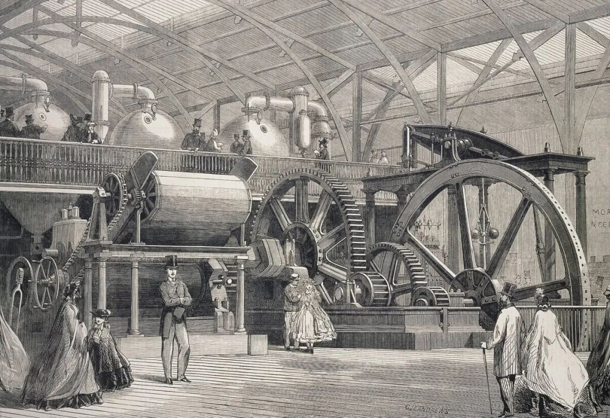
关键问题似乎在于，社会变革滞后lag[læɡ] v. 滞后；落后于使其成为必需的技术革新。究其原因，技术革新能够提高生产力和生活水平，所以备受欢迎，很快推广开来，而社会变革通常会遭到抵制resistance[rɪˈzɪstəns] n. 抵制；抵抗，因为它要求人们进行自我评估和自我调整，这意味着被迫和不适。
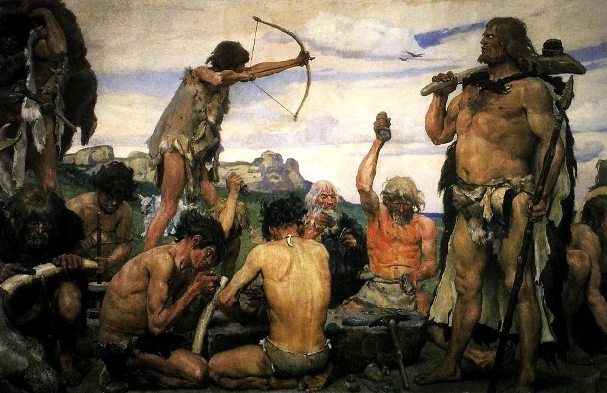
在旧石器时代，血缘纽带bond[bɒnd] n. 纽带；联结将社会结成一个整体，这既让人舒心，也意味着束缚。个人完全从属于游牧群或部落tribe[traɪb] n. 部落，成为由死者、生者和后代所组成的永恒队伍中的一员，而神灵世界的各种无形力量始终伴随左右。
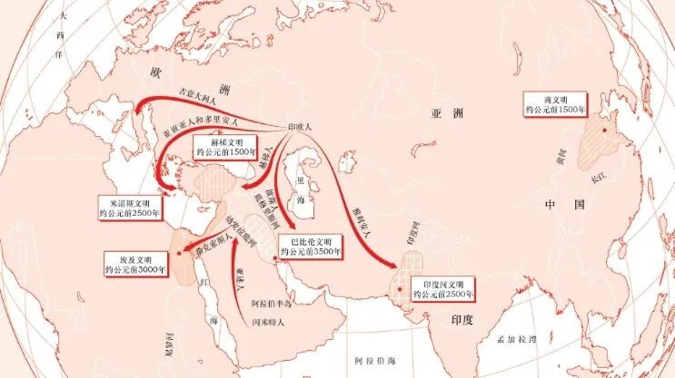
从很大程度上说，亚欧大陆从古至今的历史就是一部先进文明civilization[ˌsɪvəlaɪˈzeɪʃən] n. 文明的兴衰史，每当先进文明因内乱而衰弱，游牧民族总是乘虚而入，加速了文明的衰亡。
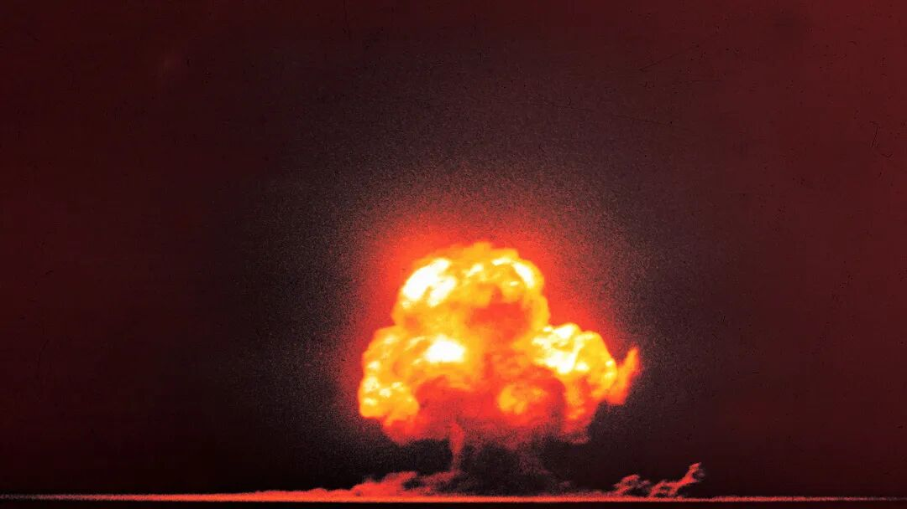
历史带给我们的重大启示是，核战争并非不可避免inevitable[ɪnˈevɪtəbl] adj. 不可避免的。因为战争本身并非植根于人性humanity[hjuːˈmænəti] n. 人性；人类，而是起源于人类社会。而人类社会是人的产物，人能够改造transform[trænsˈfɔːrm] v. 改造；转变社会。
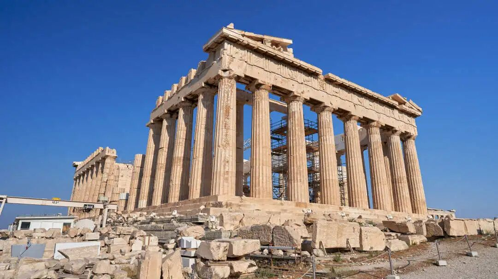
希腊人离最早的文明中心埃及和美索不达米亚很近，从而能够借鉴先驱者pioneer[ˌpaɪəˈnɪr] n. 先驱者；先锋的成就，但又没有近到丧失自身个性的地步。
亚里士多德曾在书中道出了阶级对妇女生活性质的决定作用：穷人家没有奴隶slave[sleɪv] n. 奴隶，所以他们不得不允许自家的女人走出家门，抛头露面。
公元前265年，意大利的霸主罗马走上了一条民主化democratization[dɪˌmɒkrətaɪˈzeɪʃən] n. 民主化的道路。不妨想象一下，如果一切顺利的话，这一民主化进程process[ˈprɒses] n. 进程；过程将使罗马成为世界历史上第一个民主化的民族国家。然而，即便真的存在这种可能性，随着罗马卷入involve[ɪnˈvɒlv] v. 卷入；涉及一系列的海外战争，这种前景也将彻底化为泡影。
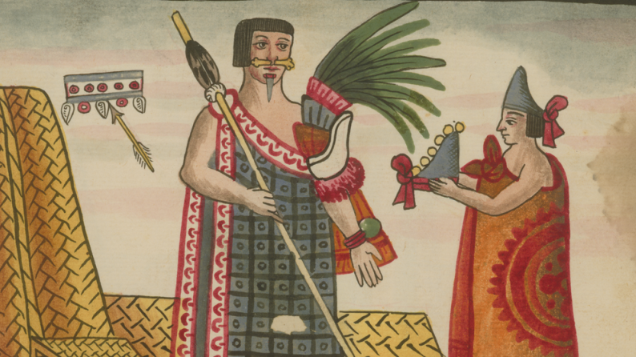
阿兹特克人认为捕获俘虏甚至比收取贡品更重要，因为他们的祭司警告说，世界一直有爆发大灾难的危险，尤其是太阳有可能会熄灭，只有用活人献祭sacrifice[ˈsækrɪfaɪs] n. 献祭；牺牲才能避免触怒天上的神灵。
然而，这种做法让阿兹特克人陷入到一个名副其实的恶性循环cycle[ˈsaɪkl] n. 循环；周期：为了避免大灾难要用活人献祭，而只有发动战争才能获得活人祭品，只有用活人献祭才能打赢战争，这些祭品又只有通过战争才能得到。
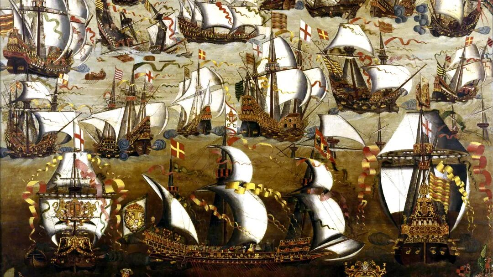
讽刺的是，西班牙的海外事业一方面促进了西北欧飞速发展的资本主义capitalism[ˈkæpɪtəlɪzəm] n. 资本主义经济，它所带来的财富反而阻碍了伊比利亚半岛姗姗来迟的基本制度改革。短短几十年的辉煌之后，西班牙帝国很快就不可逆转地突然衰落decline[dɪˈklaɪn] n. 衰落；下降，症结就在于此。
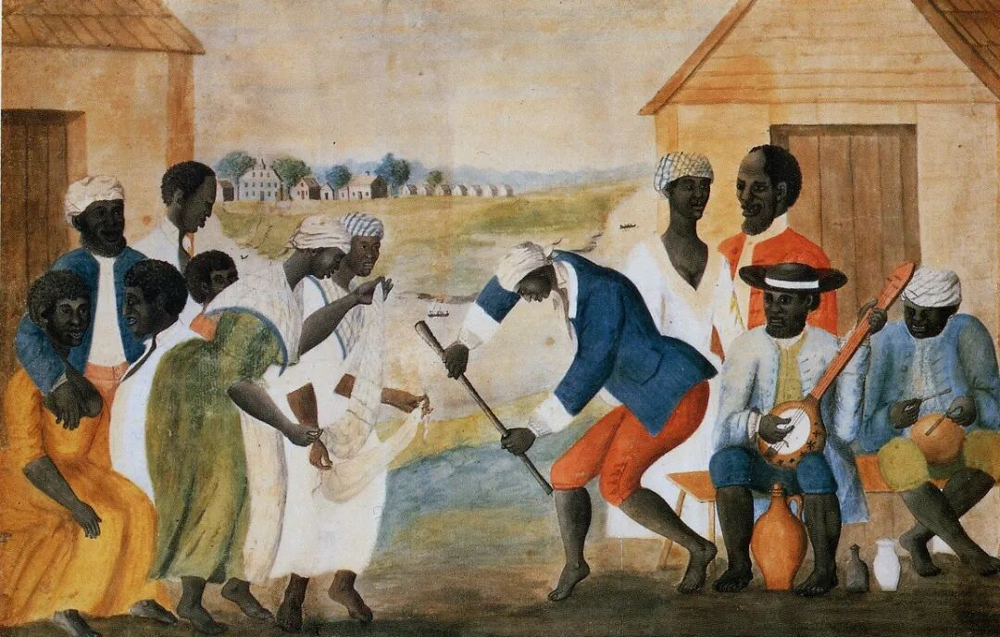
美洲参与新兴全球经济的代价是奴隶制slavery[ˈsleɪvəri] n. 奴隶制，东欧付出的代价则是农奴制。两者是出于相同的基本动因，即需要大量可靠的廉价劳动力labor[ˈleɪbər] n. 劳动力；劳动，为利润丰厚的西欧市场生产商品。
如果将帝国主义imperialism[ɪmˈpɪriəlɪzəm] n. 帝国主义定义为是“一个国家、民族或种族对其他类似的集团进行直接或间接的、政治或经济的统治或控制”，那么，帝国主义就同人类文明一样古老。
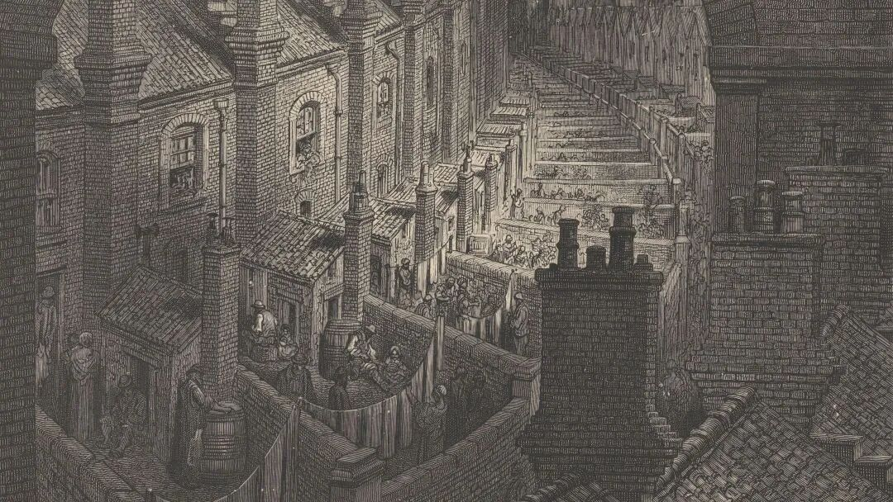
可以将自由主义liberalism[ˈlɪbərəlɪzəm] n. 自由主义定义为一种特殊的纲领，不断壮大的中产阶级以此提出了自己争取的利益和追求的主导权。秉持自由主义纲领的中产阶级反过来受到城市工人或无产阶级的挑战challenge[ˈtʃælɪndʒ] n. 挑战。
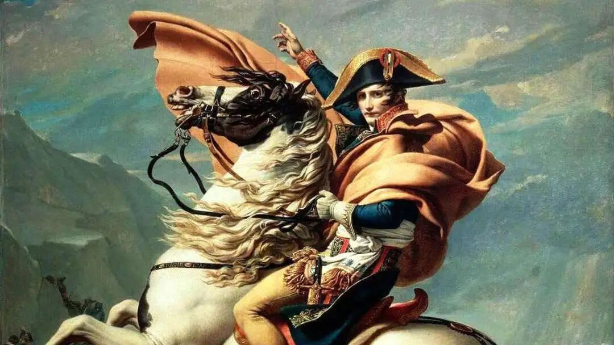
法国大革命的意识形态ideology[ˌaɪdiˈɒlədʒi] n. 意识形态对其始作俑者造成了适得其反的效果。拿破仑“冒犯”了“自由、平等、博爱”口号所唤醒和激励inspire[ɪnˈspaɪər] v. 激励；鼓舞的人们。当拿破仑背叛了自己所倡导的原则principle[ˈprɪnsəpl] n. 原则，人们起来反抗他们的导师。
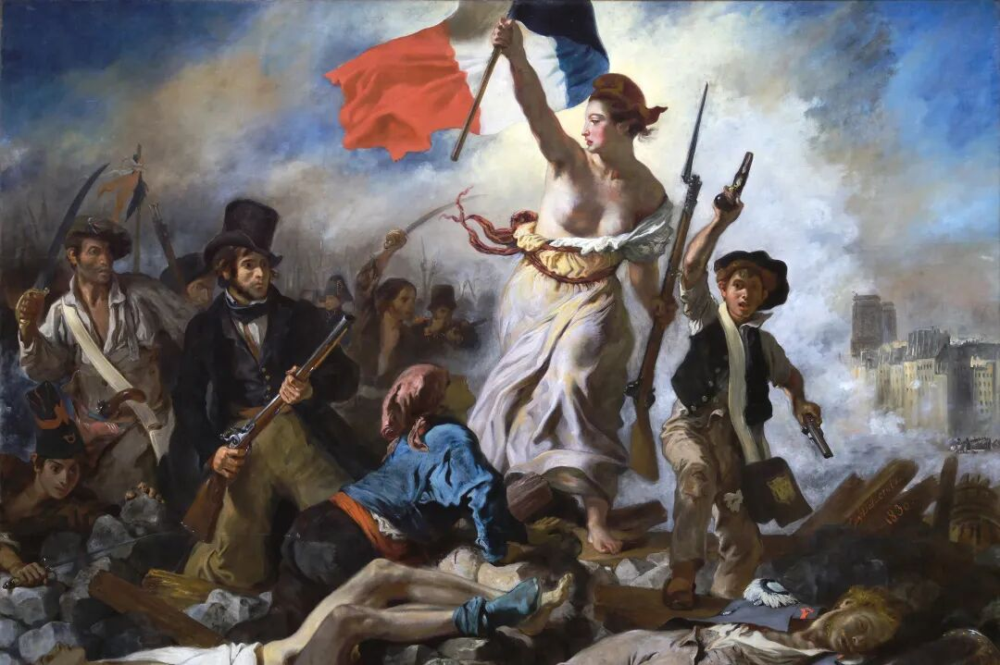
在19世纪的进程中，民族主义nationalism[ˈnæʃənəlɪzəm] n. 民族主义的性质发生了蜕变。民族主义起初是一种人道和宽容的信条doctrine[ˈdɒktrɪn] n. 信条；教义，这种信条的基础是手足情谊的观念而不是彼此势不两立的民族主义运动。但是，到19世纪下半叶，由于社会达尔文主义的影响……民族主义日益蜕变为沙文主义和军国主义militarism[ˈmɪlɪtərɪzəm] n. 军国主义。
20世纪30年代，各国逐渐加大了重整军备rearmament[riːˈɑːməmənt] n. 重整军备的力度。重整军备的势头momentum[məˈmentəm] n. 势头；动力不仅没有刹住，反而愈演愈烈，因为军火工业带来了想象中的安全感，还可以提供就业机会……日益庞大的军火储备迟早要投入使用，只是还需要找到某种理由。“生存空间space[speɪs] n. 空间”说应运而生，成为最名正言顺的理由。
从过去的经验中汲取智慧wisdom[ˈwɪzdəm] n. 智慧，
在面对个人挑战时保持清醒与洞察insight[ˈɪnsaɪt] n. 洞察；洞察力。
全球突破2000万读者都在读的世界经典classic[ˈklæsɪk] n. 经典；杰作巨著

上图扫码回复：福利资源resource[ˈriːsɔːrs] n. 资源
《哲学philosophy[fɪˈlɒsəfi] n. 哲学100问》